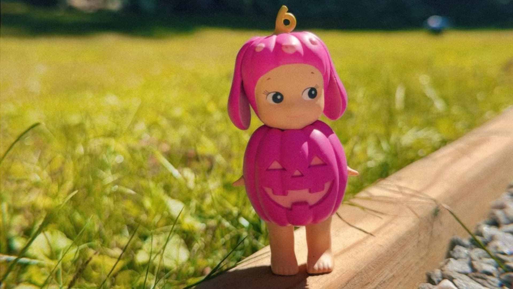
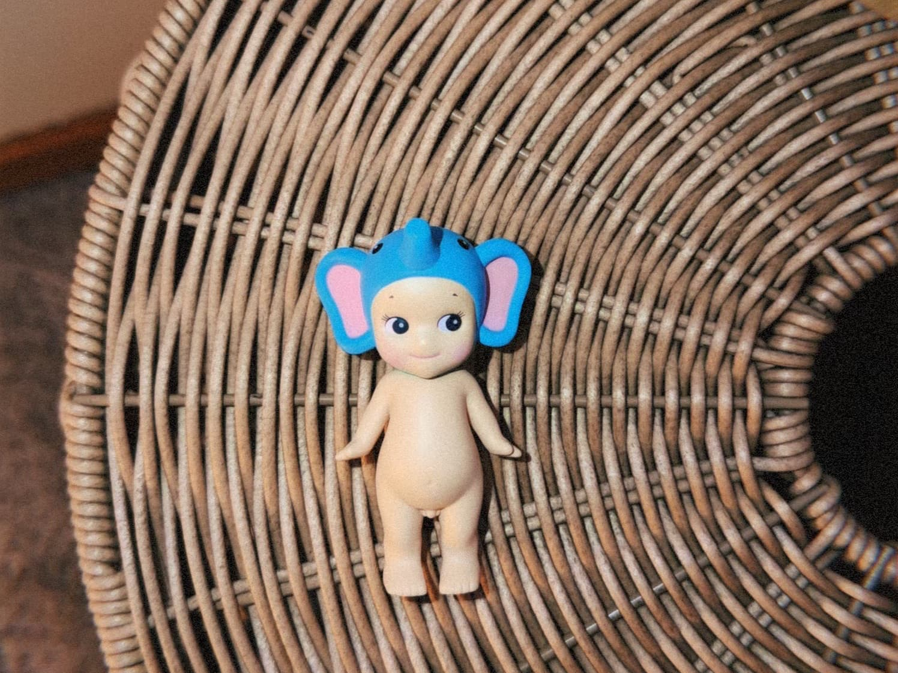
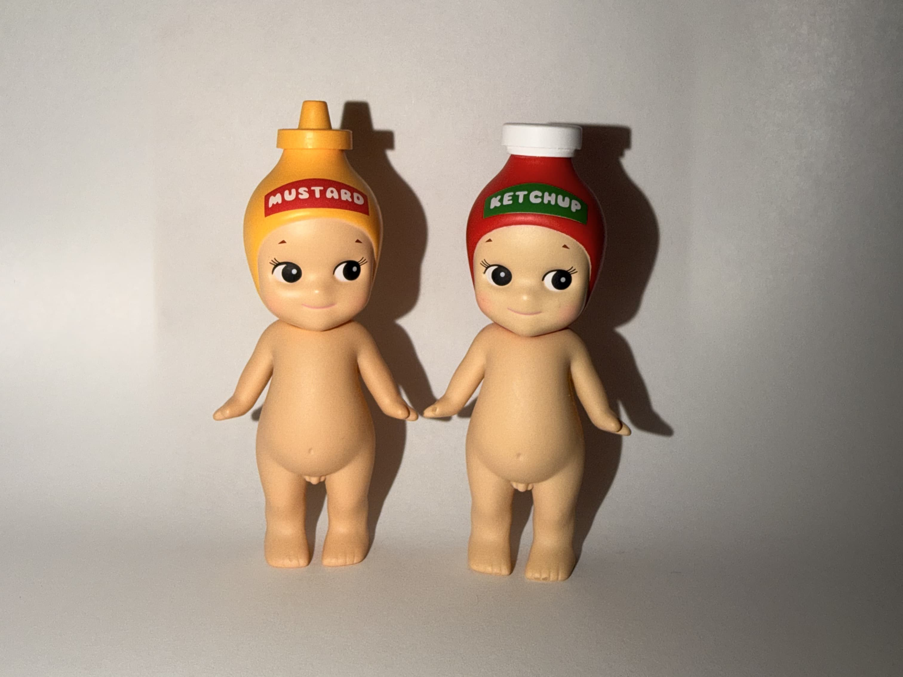
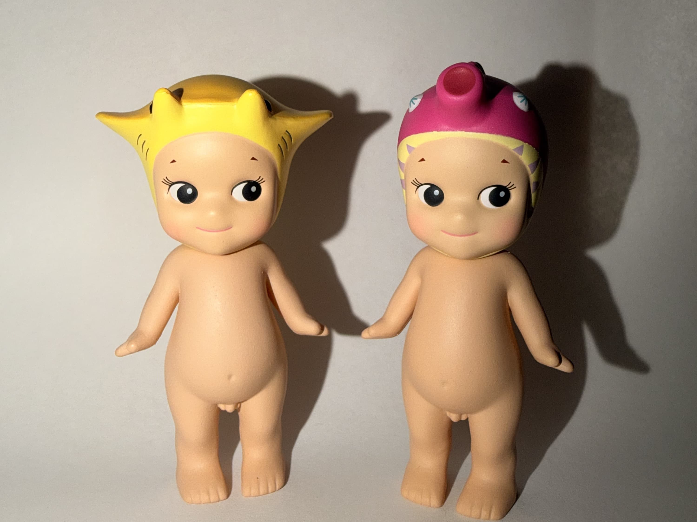
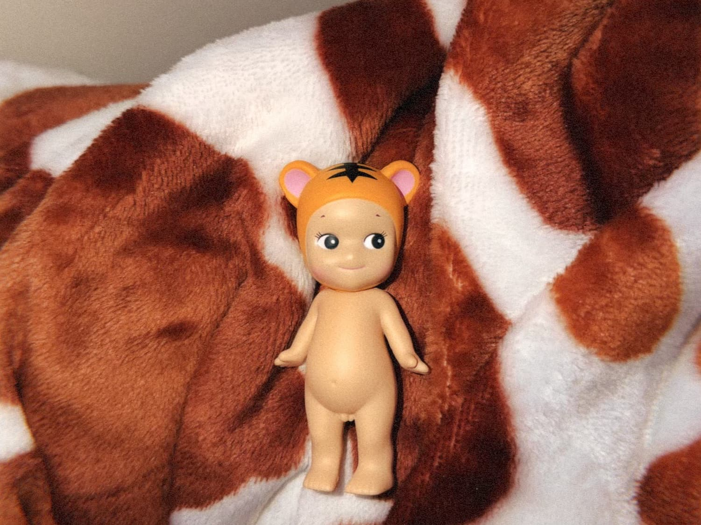

Sonny Angel Collections
Explore the different Sonny Angel collections and discover the variety of themes and designs.
Different Themes and Designs

Sonny Angel collections feature many different themes, including animals, flowers, food, and seasonal designs. Each series has its own style, giving collectors lots of different figures to discover.
Some collectors enjoy finding every figure in a series, while others choose their favorites. There are so many designs that everyone can find something they enjoy.
About Sonny Angels
Sonny Angels are collectible figures that come in many different themes, costumes, and designs. Each series offers something unique, from adorable animals and colorful flowers to fun food-inspired characters.
Part of the fun of collecting Sonny Angels is discovering new series, finding favorite designs, and sharing your collection with other collectors!
The Fun of Collecting
Collecting Sonny Angels is a fun way to discover different characters and series. Each figure has its own unique design, making every new addition exciting.
Many collectors enjoy trading figures, displaying their favorites, and searching for rare designs to add to their collections.

Safari Series
Features animal-inspired designs that you would see on a safari adventure.

Snack Series
Includes fun food-themed figures inspired by snacks and condiments.

Marine Series
Showcases ocean-inspired angels that would be spotted in an aquarium.

Animal Series
Features a variety of animal-inspired designs from around the world.